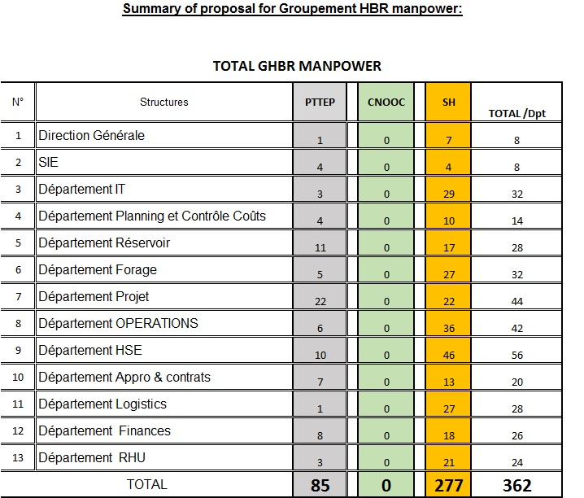

Répartition des effectifs GTFT

Macro Structure
SONATRACH, PTTEP et CNOOC ont conclu le 17 janvier 2010 un contrat avec l'ALNAFT pour la recherche et l'exploitation des hydrocarbures sur le périmètre contractuel HASSI BIR REKAIZ (blocs 443a, 424a, 414ext et 415ext), approuvé par le décret présidentiel n° 10-145 du 24 mai 2010, aussi les parties ont conclu un Accord d’Exploitation relatif à l’exploitation des hydrocarbures sur le périmètre contractuel HASSI BIR REKAIZ. La période de production durera 25 ans à compter de la date d’approbation.

Statistiques